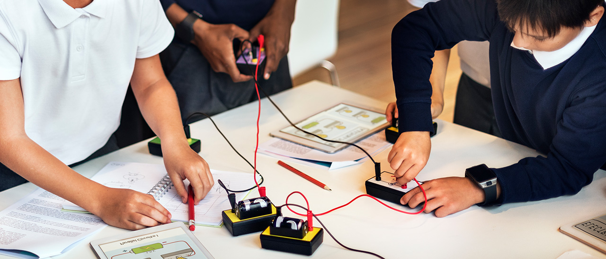

What is a Circuit?
Our daily life is surrounded by electrical circuits, these are present in homes, businesses and even in cell phones.
First, let's define the word circuit. A circuit is defined as a complete and closed path around which an electric current can circulate. It can also mean a system of electrical conductors and components that form such a path. Every time you flip a switch (in operation), you are completing a circuit and letting the electrical currents do their thing.
What is an electrical circuit?
An electrical circuit is a path or path through which an electrical current flows. The path can be closed (joined at both ends), making it a loop. A closed circuit makes the flow of electric current possible. It can also be an open circuit where the flow of electrons is cut off due to the trajectory breaking. An open circuit does not allow electrical current to flow.
An electrical circuit is simply an electrical network that is defined as the connection of two or more electrical or electronic components that allow generating, transporting and using electrical energy in order to transform it into another type of energy such as: heat energy (stove), light energy (bulb) or mechanical energy (motor).
All electrical and electronic circuits, regardless of their complexity, have three factors associated with them: Current, Voltage, and Resistance.
In summary:
Circuit: It is a closed route, for example a car circuit.
Electrical: We refer to electrical energy or electricity.
Then the definition of Electric Circuit: It's the closed circuit that generates electricity or electric current.
Types of Electrical Circuits
There are six types of electrical circuits according to the connection of the components that compose it:


Characteristics of an Electrical Circuit
Differences between Electrical Circuits and Electronic Circuits
The difference between electrical and electronic circuits is not very clear. In general we can say that if a circuit contains semiconductors it is an Electronic Circuit. On the other hand, an Electric Circuit has a series of electrical elements or components such as resistors, inductors, capacitors and power supplies. These components are electrically connected to each other for the purpose of generating, transporting, or modifying electrical signals.
| Electrical Circuit | Electronic Circuit |
|---|---|
| Components: In addition to generators, electrical circuits contain passive components and manual control systems such as switches and pushbuttons. | Components: Electronic circuits contain active elements such as semiconductors and in many cases include automatic control systems. |
| Objective: Take advantage of electrical energy as a source to transform it into other forms of energy. In relation to this, we are interested in Electric Power: the amount of energy per unit of time that we can use. | Objective: They are designed so that electrical signals carry information, either through analog or digital signals. |
| Type of current: They work with alternating or direct current depending on the circuit. The intensity can vary in amps and the voltage range is wide. | Type of current: They generally work with direct current. They operate on a few volts and the current intensity is usually on the order of milliamps (mA). |
| The flow and intensity of the current is controlled by switches and resistors. | The control of these circuits is carried out by electrical signals. |
Active and Passive Components

- Active Components are those that are capable of exciting circuits or controlling the flow of current. They are mainly electric generators and certain semiconductor components. Examples of Active Components: Diode, Operational Amplifier, Thyristor, Battery, etc.
- Passive Components are those that do not need an energy source for their operation. They do not have the ability to control current in a circuit. Examples of Passive Components: Resistance, Capacitor, Inductor.
What is the Function of an Electric Circuit?
The purpose of an Electric Circuit is to transform the electrical energy produced by the electrons that are moving, into a different and useful energy for what we need, for example, heat energy (stove), light energy (light bulb), mechanical energy (motor ), etc…
Analysis of an Electrical Circuit
Analyzing an electrical circuit consists of knowing the value of electrical quantities, usually voltage and current, at certain points in the circuit. From these, other quantities of interest such as power or resistance can be obtained. Electrical quantities can be obtained using measuring instruments if the circuit physically exists, or deduced theoretically from a set of laws applied to the electrical scheme that represents the real circuit. In the latter case we speak of theoretical analysis of circuits. The objective of the theoretical circuit analysis is to deduce voltage and current values at each point of the circuit that are close to the values that would be obtained if the symbols of the electrical diagram were replaced by real electrical components and we carried out the measurement.
Through circuit analysis we can determine what a circuit is for, know what voltage values exist at each point or what current flows through each element. We can also determine if a real circuit is working properly. In this case, a measurement of the magnitude must be made and compared with the value predicted by the theory.
To carry out the theoretical analysis of a circuit it is necessary to know:
- The mathematical relationship that exists between current and voltage at the terminals of each electrical component in the circuit. This relationship is called a mathematical model or characteristic equation.
- The mathematical relationship that is derived from the way the components are connected, that is, the relationship that is derived from the topology of the circuit.